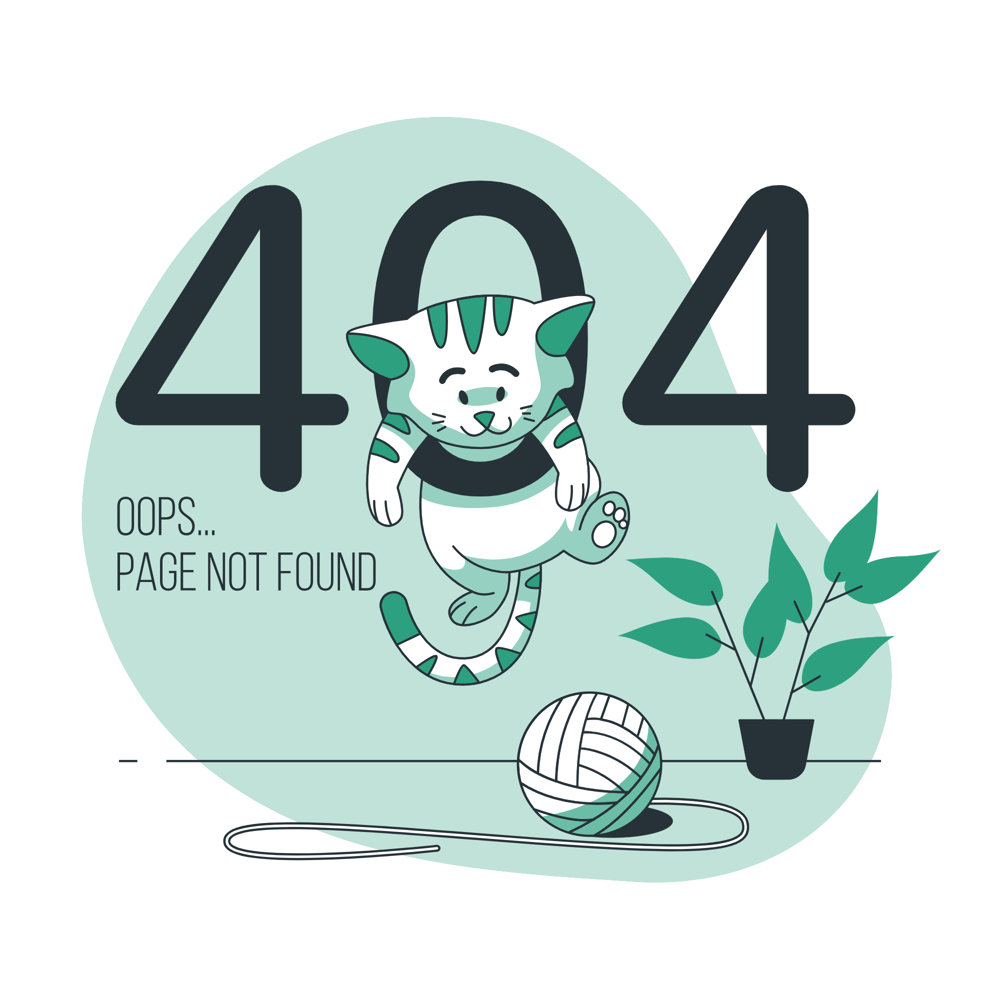

<div class="padding page-404-container">
  <app-title [title]="'Page introuvable'"/>
  
  <button 
    routerLink="/accueil" 
    class="button" 
    aria-label="redirection vers la page d'accueil"
    >Accueil
  </button>
</div>